Which part of an Ethernet frame is NOT counted in the frame length?
- Counted as part of the data field.
- Counted.
- They are a physical-layer header.
- The CRC is counted.
Ethernet from top to bottom: IEEE 802 and its LLC/MAC split, every field of the frame and its size, the 48-bit MAC address and how to tell unicast, multicast and broadcast apart, the four generations from 10 Mbps to 10 Gbps, and why full-duplex switched Ethernet no longer needs CSMA/CD. (On the Slides page this deck is listed as Data Link Layer Part 3.)
Every original slide is shown unchanged. Yellow marks on a slide point to a numbered note: hover or tap a mark to jump to its note, and hover a note to see its marks. Questions tagged Past exam appeared on a real paper; Prediction questions are likely angles, not confirmed. Pick an answer to each question: a wrong pick tells you why it is wrong, so you can try again.
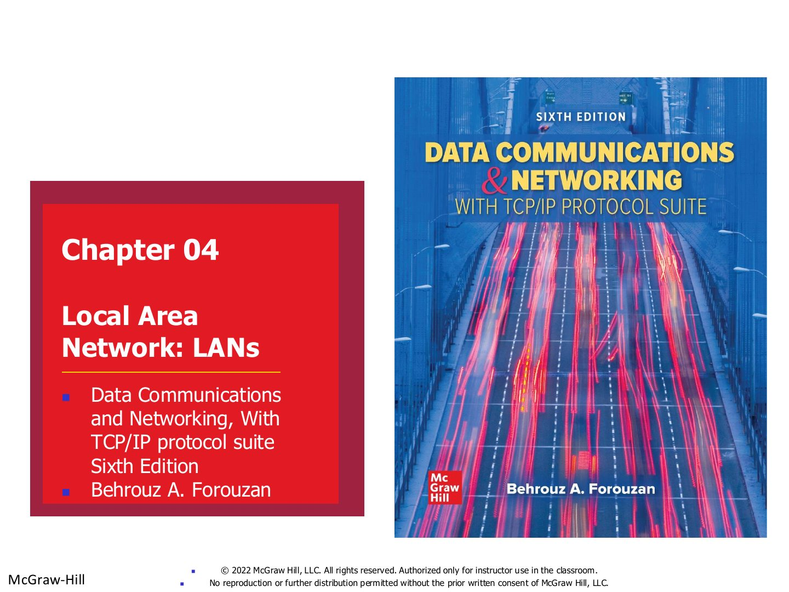
This deck is all about Ethernet, the LAN technology almost every wired network uses. It covers the IEEE 802 standards and how they split the data link layer, every field of the Ethernet frame and its size, the 48-bit MAC address and how to tell unicast, multicast and broadcast apart, the four generations from 10 Mbps to 10 Gbps, and finally why full-duplex switched Ethernet no longer needs CSMA/CD. Expect calculation-style questions on frame sizes and padding, and identification questions on addresses.
Tip Frame fields and sizes: preamble 7 + SFD 1 (physical-layer header) · destination 6 · source 6 · type/length 2 · data 46–1500 · CRC 4.
Which part of an Ethernet frame is NOT counted in the frame length?
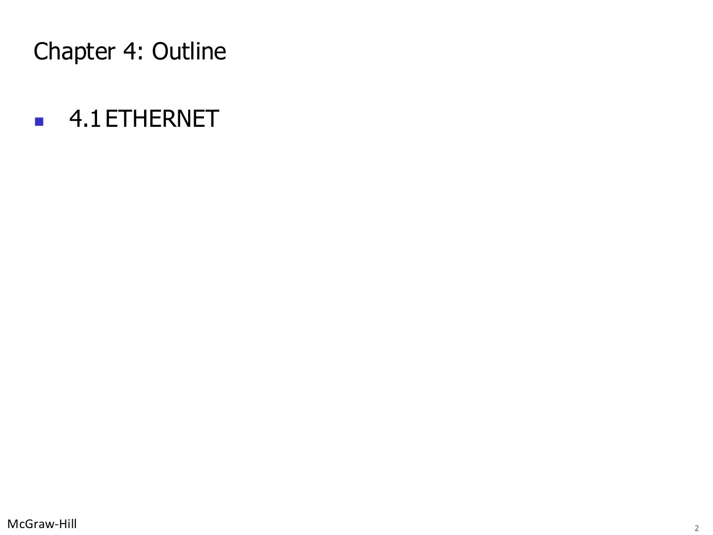
One section, 4.1 Ethernet. (On the course Slides page this deck is listed as Data Link Layer Part 3, because Ethernet is a data link layer protocol: it continues Chapter 3.)
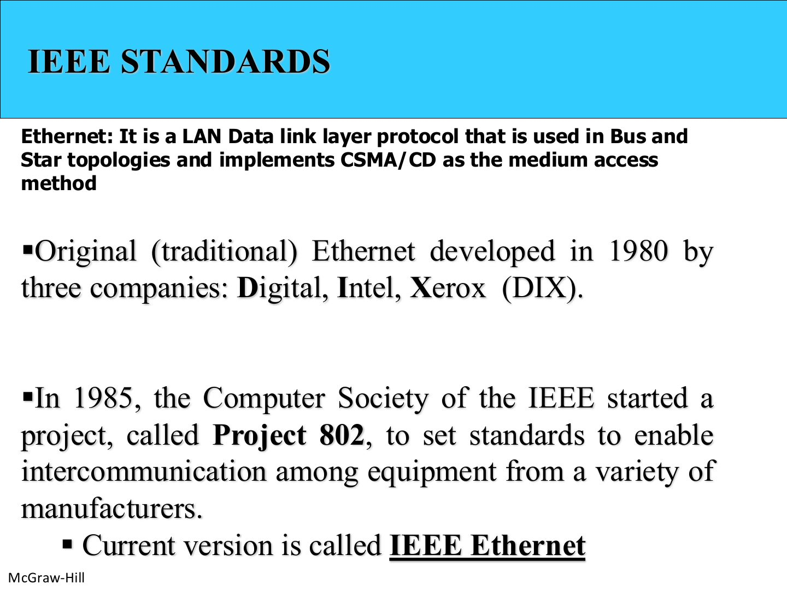
Ethernet is a LAN protocol at the data link layer, used in bus and star topologies. Classic Ethernet uses CSMA/CD as its medium access method: listen before sending, keep listening while sending, and stop and back off on a collision (Chapter 3 Part 2).
Its history in two steps. The original Ethernet was developed in 1980 by three companies, Digital, Intel and Xerox, so it is called DIX Ethernet. In 1985 the IEEE Computer Society started Project 802 to write standards so that equipment from different manufacturers could work together; the current version is called IEEE Ethernet (802.3).
Seen again Ch 3 Part 2, slide 17: How CSMA/CD works
Seen again Ch 1 Part 1, slide 32: IEEE as a standards body
Which access method does classic Ethernet use?
DIX Ethernet was developed by:
Why did IEEE start Project 802 in 1985?
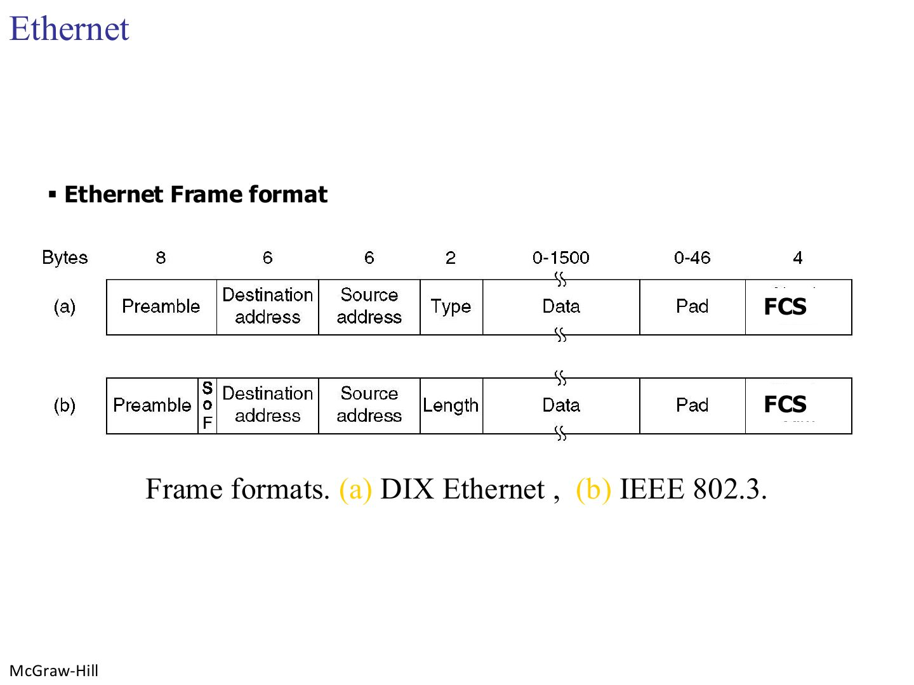
The two frame formats are almost identical: preamble, destination address (6 bytes), source address (6), a 2-byte field, data (with padding) and the FCS (4). The one real difference is that 2-byte field: DIX uses it as a Type field (which network-layer protocol is inside), and IEEE 802.3 uses it as a Length field (how many bytes of data). Also, in 802.3 the eighth preamble byte is called the SFD (start frame delimiter).
Trap DIX → Type. 802.3 → Length. Same 2-byte position.
The 2-byte field after the source address in an IEEE 802.3 frame is:
What is the main difference between DIX and IEEE 802.3 frames?
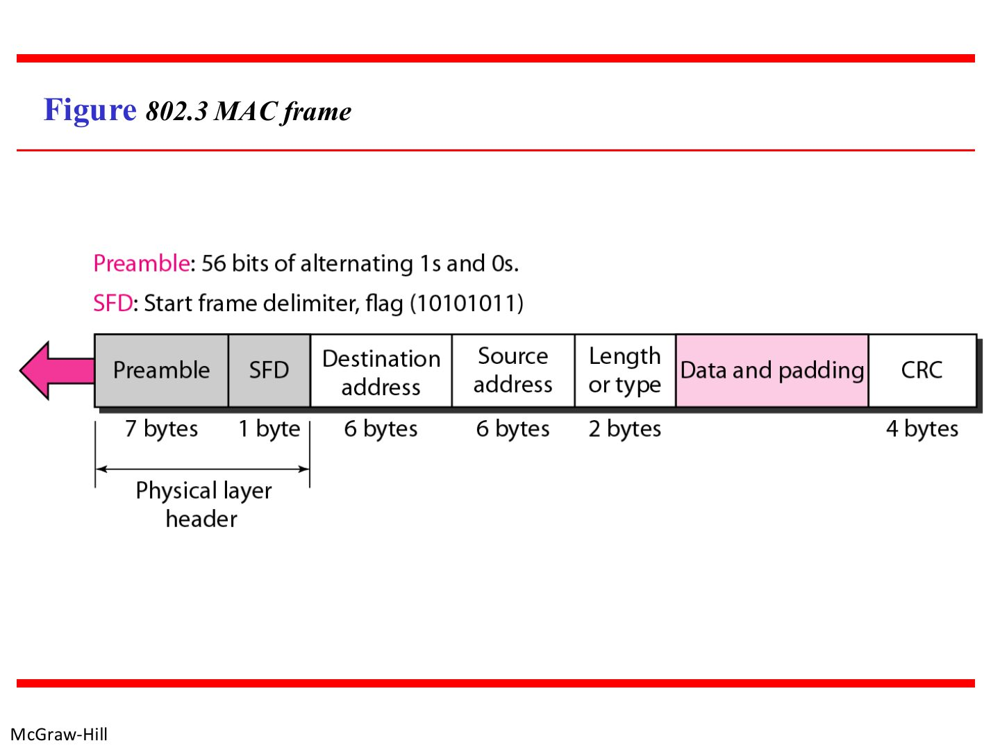
The 802.3 frame field by field: preamble 7 bytes, SFD 1 byte, destination address 6, source address 6, length or type 2, data and padding 46 to 1500, CRC 4. The preamble and SFD are added by the physical layer to wake up and synchronise the receiver, so they are not counted in the frame length: the frame officially runs from the destination address to the CRC.
Tip Frame fields and sizes: preamble 7 + SFD 1 (physical-layer header) · destination 6 · source 6 · type/length 2 · data 46–1500 · CRC 4.
How long is the CRC field of an Ethernet frame?
How long is each Ethernet address field?
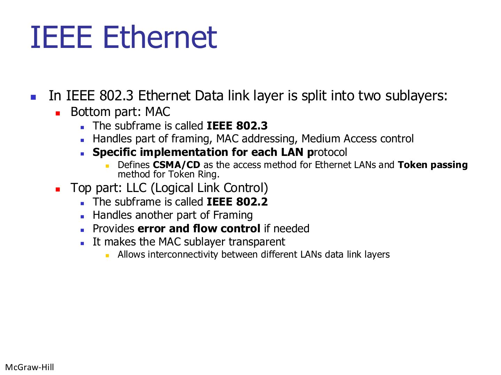
The MAC sublayer is specific to each LAN technology: for Ethernet it defines CSMA/CD; for Token Ring it defines token passing. That is why there are different MAC standards for different LANs. The top sublayer, LLC (Logical Link Control), is IEEE 802.2. It handles another part of framing and provides error and flow control if needed. It is the same for every LAN and makes the MAC sublayer transparent to the network layer: the layer above sees one LLC whether the LAN underneath is Ethernet or Token Ring, which lets different LANs interconnect.
Memory trick 802.3 = MAC for Ethernet. 802.2 = LLC on top, the same for every LAN.
Seen again Ch 3 Part 2, slide 5: The two data link sublayers
Which IEEE standard is the LLC sublayer?
Which sublayer is specific to each LAN technology?
What does it mean that LLC makes the MAC sublayer transparent?
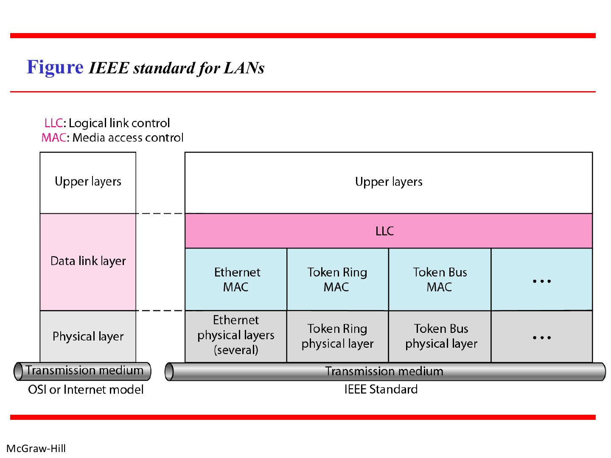
The IEEE picture: one LLC (802.2) on top, shared by all LANs; below it several MACs (Ethernet, Token Ring, Token Bus), each with its own physical layers (different cables and speeds). Swapping the LAN technology only changes the MAC and physical parts.
In the IEEE LAN standard figure, how many LLCs sit above the different MACs?
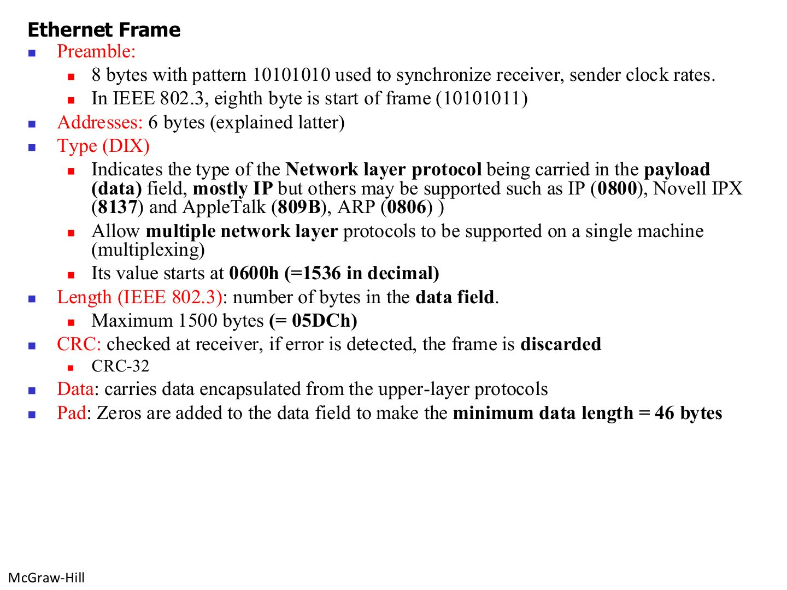
Preamble: 8 bytes of the pattern 10101010. The alternating 1s and 0s let the receiver synchronise its clock with the sender’s before the real data starts. In IEEE 802.3 the eighth byte is the SFD, 10101011: the final 11 says “the frame starts now”.
Type (DIX): says which network-layer protocol is inside the data field, mostly IP, so the receiver knows which protocol to hand the data to: 0800 = IP, 0806 = ARP, 8137 = Novell IPX, 809B = AppleTalk. This lets one machine run several network-layer protocols at once (multiplexing). Type values start at 0x0600 = 1536.
Length (IEEE 802.3): the number of bytes in the data field, at most 1500 = 0x05DC. Because lengths stop at 1500 and types start at 1536, a receiver can tell which one it is: a value of 1500 or less is a length; 1536 or more is a type.
CRC: a CRC-32 calculated over the frame. The receiver recomputes it; if it doesn’t match, the frame is discarded (Ethernet detects errors but doesn’t correct them; a higher layer can resend). Data: the packet from the upper layer. Pad: if the data is shorter than 46 bytes, zeros are added to reach 46. Example: 20 bytes of data needs 46 - 20 = 26 pad bytes.
Memory trick The two-byte field: ≤ 1500 → length (802.3); ≥ 1536 → type (DIX).
The type value 0x0800 in an Ethernet frame means the payload is:
If the data is only 20 bytes, how many pad bytes are added?
An Ethernet receiver corrects a frame whose CRC check fails.
The two-byte field in a received frame contains 1200 (decimal). It is:
What is the preamble for?
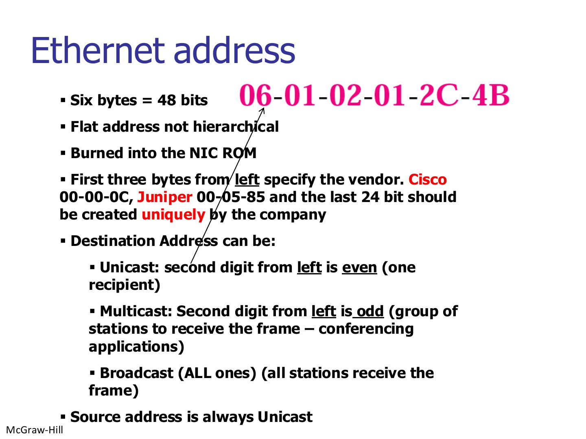
An Ethernet (MAC) address is 6 bytes = 48 bits, written in hex like 06-01-02-01-2C-4B. It is flat, not hierarchical: unlike an IP address, no part of it says which network the device is on. It is burned into the NIC’s ROM at the factory.
The first three bytes identify the vendor (for example Cisco 00-00-0C, Juniper 00-05-85); the last 24 bits are assigned uniquely by that company, so no two NICs in the world should share an address.
A destination address can be unicast (one recipient), multicast (a group of stations, for example a conferencing application) or broadcast (all ones, every station). To tell unicast from multicast, look at the second hex digit from the left: even means unicast, odd means multicast. The source address is always unicast, because a frame always comes from exactly one device.
Seen again Ch 1 Part 2, slide 28: MAC = physical = NIC address
An Ethernet MAC address is:
A source MAC address can be a multicast address.
What do the first three bytes of a MAC address identify?
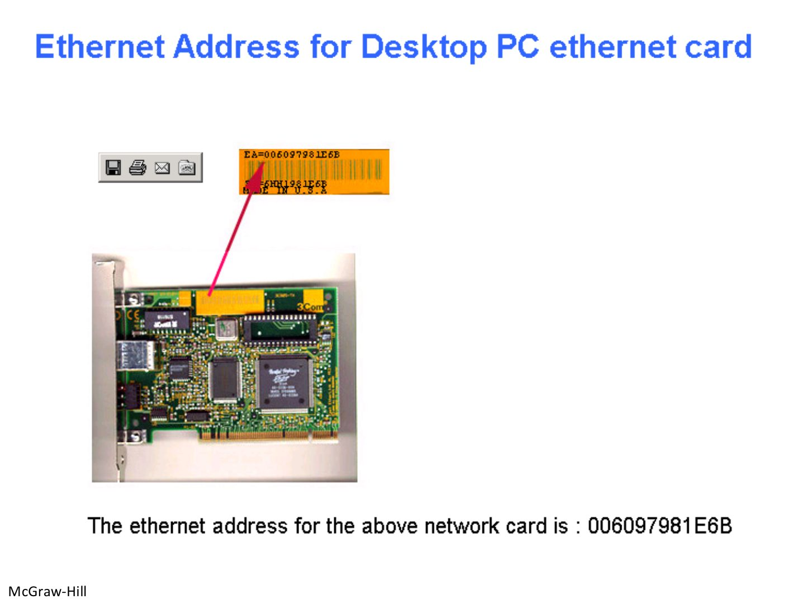
The address on this card is 00-60-97-98-1E-6B: it is printed on a sticker and stored in the card’s ROM. 00-60-97 is the vendor part; 98-1E-6B is the card’s own serial part. The second hex digit is 0, which is even, so it is a unicast address, as every NIC’s own address must be.
The card’s address is 00-60-97-98-1E-6B. Which part identifies the vendor?
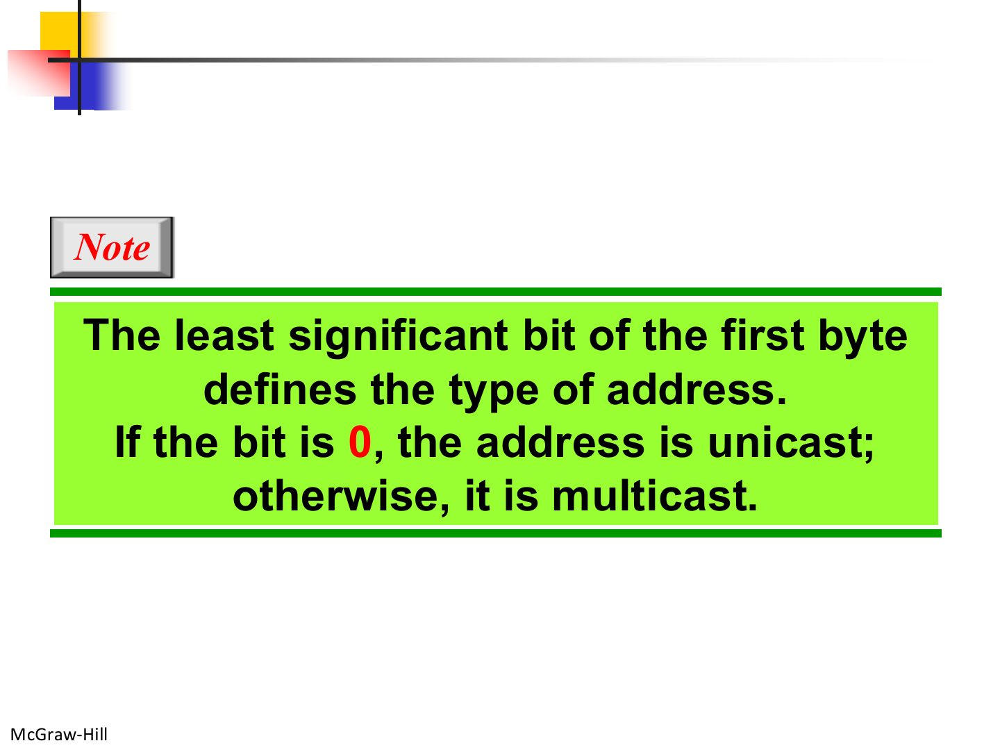
The precise rule: the least significant bit of the first byte decides the type: 0 = unicast, 1 = multicast. That bit is the last bit of the second hex digit (each hex digit is 4 bits, so the first byte is the first two digits). An even hex digit ends in binary 0 and an odd one ends in 1, which is why the even/odd shortcut works. Careful: it is the second hex digit, not the second byte.
Trap “Second digit” means the second HEX digit (part of byte 1), not the second byte.
Which bit decides whether a MAC address is unicast or multicast?
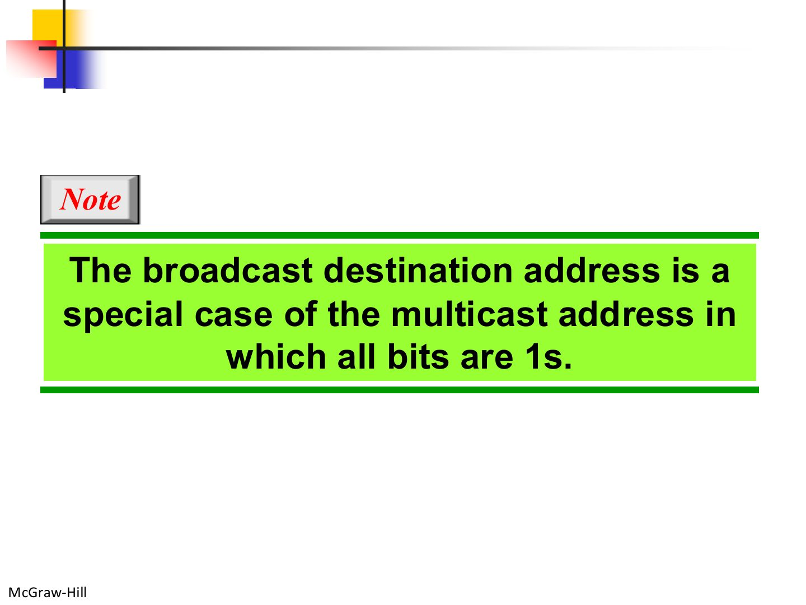
The broadcast address, FF:FF:FF:FF:FF:FF, has all 48 bits set to 1. Since its multicast bit is also 1, broadcast is a special case of multicast: the group is “everyone”. Every station on the LAN accepts a broadcast frame (ARP requests use it).
The broadcast address is a special case of a multicast address.
The Ethernet broadcast address is:
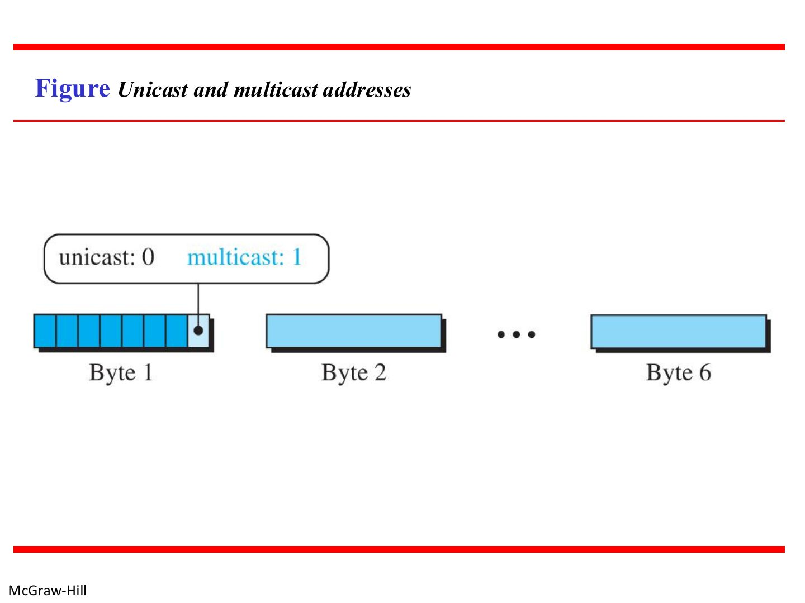
The figure marks the deciding bit: the last bit of byte 1 (the first byte sent). Byte 1 is shown with that bit as 0 for a unicast address and 1 for a multicast address. The other 47 bits don’t affect the type.
In the figure, the deciding bit for unicast or multicast is:
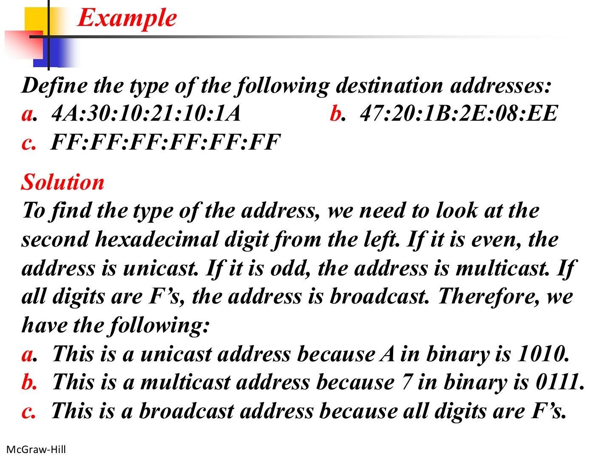
Worked example, looking only at the second hex digit. (a) 4A:30:10:21:10:1A: A = 1010, even, so unicast. (b) 47:20:1B:2E:08:EE: 7 = 0111, odd, so multicast. (c) FF:FF:FF:FF:FF:FF: all F, so broadcast. A quick list: even digits are 0 2 4 6 8 A C E; odd digits are 1 3 5 7 9 B D F.
The destination address 01:00:5E:00:00:01 is:
The destination address 3C:52:82:11:AA:07 is:
The destination address 4B:12:00:9A:10:F0 is:
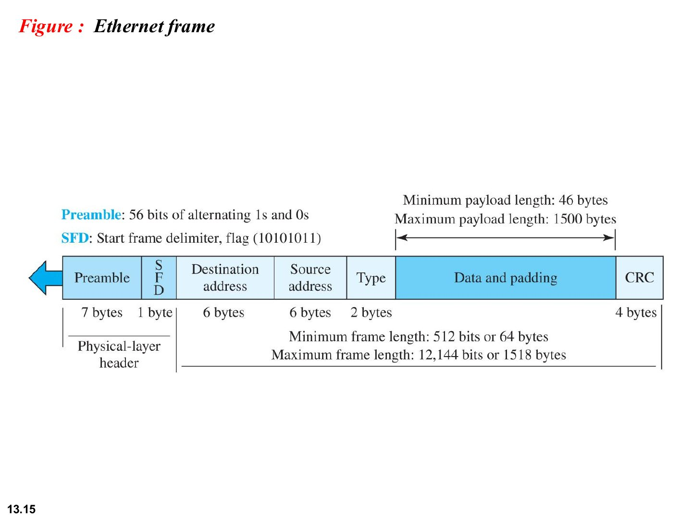
The figure shows the size limits. The payload (data) is at least 46 and at most 1500 bytes. The frame is therefore at least 64 bytes (512 bits) and at most 1518 bytes (12,144 bits). Frame length counts destination (6) + source (6) + type/length (2) + data + CRC (4), but not the preamble and SFD.
The Ethernet payload must be between:
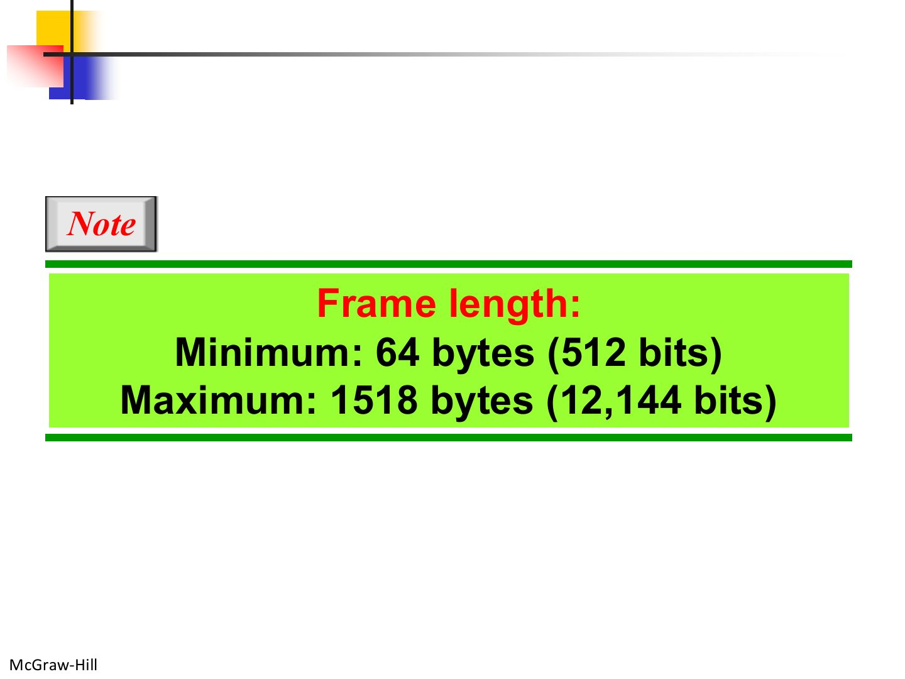
Where 64 and 1518 come from: the header and trailer add 18 bytes (6 + 6 + 2 + 4). With the minimum data, 18 + 46 = 64 bytes (× 8 = 512 bits); with the maximum, 18 + 1500 = 1518 bytes (× 8 = 12,144 bits). The minimum exists for CSMA/CD: a frame must be long enough that the sender is still transmitting when news of a collision gets back to it, otherwise it couldn’t detect the collision.
Memory trick 18 bytes of overhead: 6 + 6 + 2 + 4. Add 46 → 64. Add 1500 → 1518.
The minimum Ethernet frame length is:
The maximum Ethernet frame length (without preamble) is:
The minimum frame of 64 bytes is how many bits?
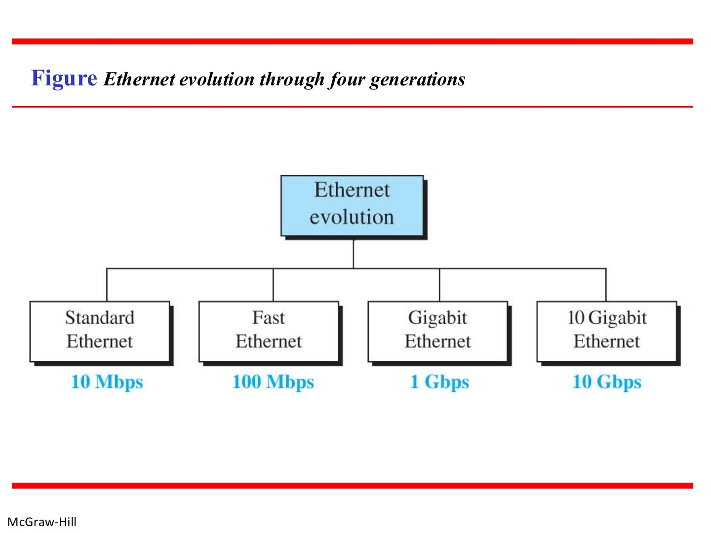
Ethernet has gone through four generations, each 10 times faster than the last: Standard Ethernet 10 Mbps, Fast Ethernet 100 Mbps, Gigabit Ethernet 1 Gbps, 10 Gigabit Ethernet 10 Gbps. The frame format stayed the same throughout, which is why old and new equipment can work together.
Fast Ethernet runs at:
By how much does each Ethernet generation increase the speed?
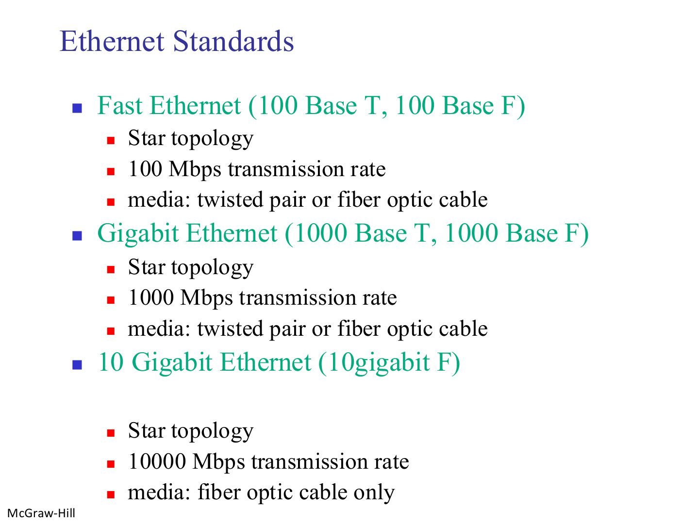
Fast Ethernet (100Base-T, 100Base-F): star topology, 100 Mbps, over twisted pair or fibre. Gigabit Ethernet (1000Base-T, 1000Base-F): star, 1000 Mbps, twisted pair or fibre. 10 Gigabit Ethernet: star, 10,000 Mbps, and in these slides it uses fibre-optic cable only. All the newer generations use a star topology around a switch; the shared bus belongs to the original Standard Ethernet.
In the slides, 10 Gigabit Ethernet uses only fibre-optic cable.
Which topology do Fast, Gigabit and 10 Gigabit Ethernet use?
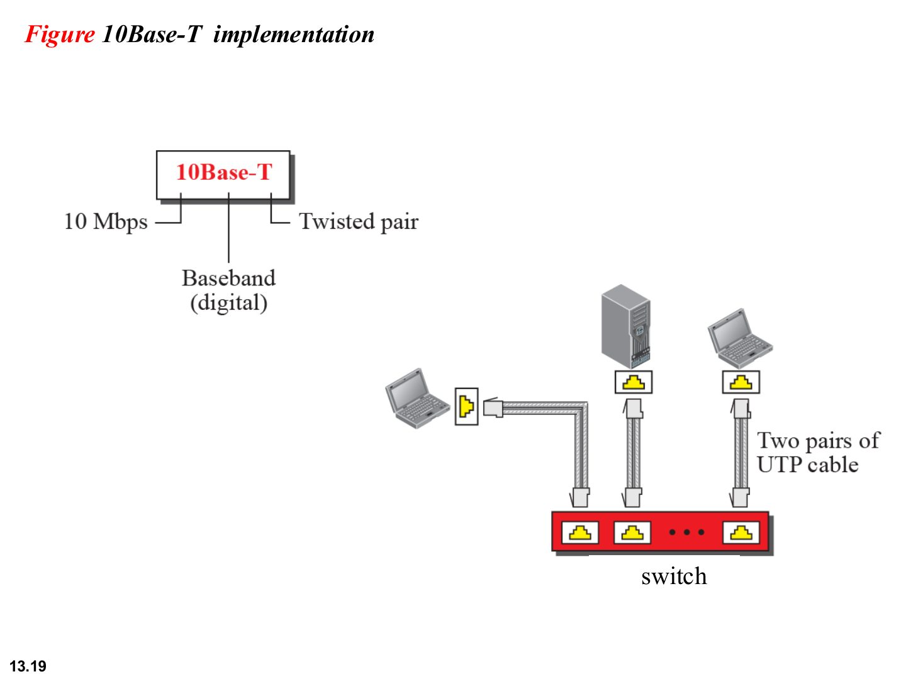
Read the name in three parts: 10 = 10 Mbps, Base = baseband (the cable carries one digital signal, not several modulated channels), T = twisted pair. 10Base-T connects each station to a hub or switch with two pairs of UTP: one pair to send and one to receive. Other letters: F = fibre, FX/SX/LX = kinds of fibre, CX = copper (shielded twisted pair).
Memory trick Name = speed + Base(band) + medium: T = twisted pair, F = fiber, X/LX/SX = fiber kinds, CX = copper.
In “10Base-T”, the T stands for:
What does “Base” mean in 10Base-T?
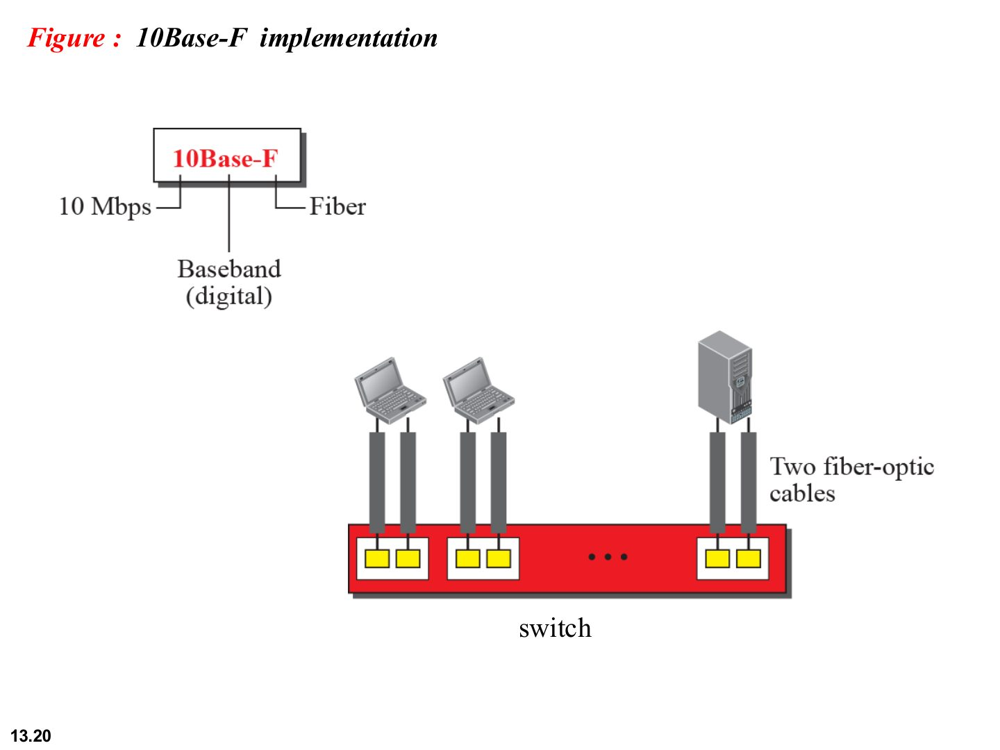
10Base-F: 10 Mbps baseband over fibre-optic cable, with two fibres per station (one for each direction) running to the switch. Fibre lets the link be much longer and immune to electrical interference.
10Base-F uses which medium?
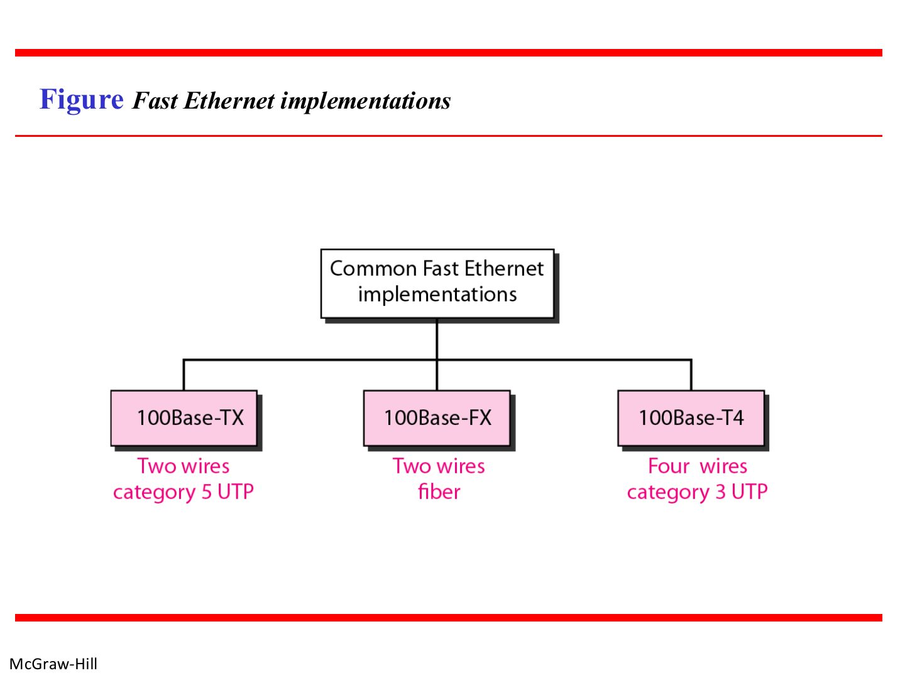
Fast Ethernet has three main forms: 100Base-TX uses two pairs of Cat 5 UTP; 100Base-FX uses two fibres; 100Base-T4 uses four pairs of Cat 3 UTP (older, lower-quality cable, so it spreads the signal over more pairs).
Which Fast Ethernet form uses four pairs of Cat 3 UTP?
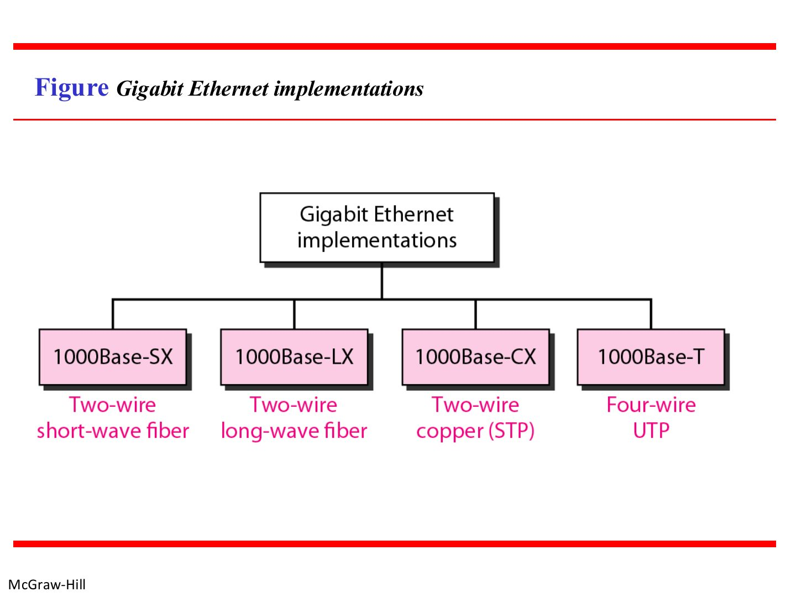
Gigabit Ethernet: 1000Base-SX uses short-wave fibre (shorter distances), 1000Base-LX uses long-wave fibre (longer distances), 1000Base-CX uses copper (shielded twisted pair, very short runs), and 1000Base-T uses four pairs of UTP. Memory aid: S = short, L = long, C = copper, T = twisted pair.
Which Gigabit Ethernet standard uses long-wave fibre?
1000Base-CX uses:
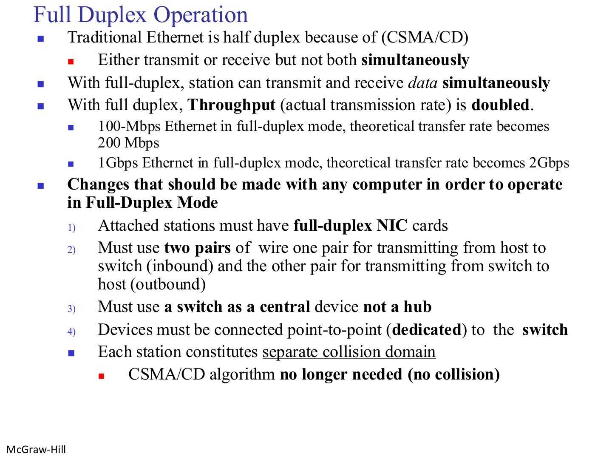
Traditional Ethernet is half duplex because of CSMA/CD: a station can either transmit or receive, but not both at the same time, since everyone shares one medium.
In full duplex, a station can transmit and receive at the same time, so the throughput is doubled: 100 Mbps Ethernet becomes a theoretical 200 Mbps (100 each way), and 1 Gbps becomes 2 Gbps.
Four changes are needed for full duplex: (1) full-duplex NICs in the stations; (2) two pairs of wire, one from host to switch and one from switch to host; (3) a switch, not a hub, as the central device (a hub repeats every signal to every port, so collisions are still possible); (4) each device connected point-to-point (a dedicated link) to the switch. Each station is then its own collision domain: nobody else shares its link, and sending and receiving use separate paths, so collisions can’t happen and CSMA/CD is no longer needed.
Trap A hub can’t do full duplex: it repeats to everyone, so collisions are still possible.
100 Mbps Ethernet in full-duplex mode has a theoretical rate of:
Full-duplex Ethernet can use a hub as the central device.
List the requirements for Ethernet to run in full-duplex mode, and say what happens to CSMA/CD.
Full-duplex NICs; two wire pairs (one each direction); a switch, not a hub, as the central device; and a dedicated point-to-point link from each station to the switch. Each station becomes its own collision domain, so there are no collisions and CSMA/CD is no longer needed.
Why is traditional Ethernet half duplex?
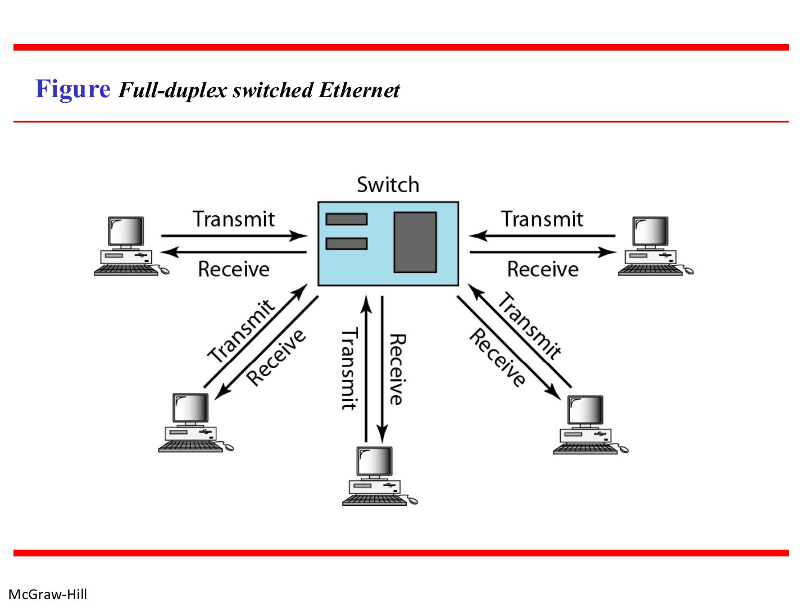
The figure: each station has separate transmit and receive paths to the switch. Traffic in one direction never meets traffic in the other, and no two stations share a wire, so the switch can forward frames between many pairs of stations at the same time.
Seen again Ch 6, slide 9: How a link-layer switch filters frames
In full-duplex switched Ethernet, each station has:
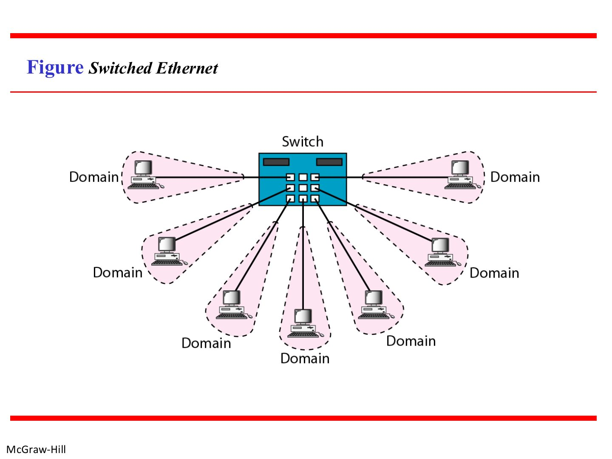
A collision domain is the set of devices whose frames can collide with each other. With a switch, each port is a separate collision domain. With a hub, all ports share one collision domain, because the hub copies every signal to every port. Replacing a 24-port hub with a 24-port switch turns 1 collision domain into 24.
An office replaces its 24-port hub with a 24-port switch. How many collision domains are there before and after?
Before: 1, since a hub repeats every frame to all ports, so all 24 stations share one collision domain. After: 24, one per switch port.
With a switch, the collision domain is: